Dossier de colaboración 2027. Dentro están las cifras reales, en qué se gasta cada euro y cuánto cuesta estar. Sin inflar nada: si lo que buscas es alcance masivo, te lo decimos desde el principio y te ahorramos la reunión.
Qué es esto
RevChill nació de una idea simple: los mejores aprendizajes del sector no pasan en la sala de plenaria, pasan tomando algo después. Así que quitamos la sala. Son encuentros de tarde, gratuitos y con aforo limitado, en terrazas y bares de cinco ciudades. Sin mesa redonda, sin agenda impresa y sin nadie intentando venderte nada.
Nueve encuentros, cinco ciudades y trece marcas que ya han pasado por ellos. En 2027 lo convertimos en una temporada ordenada, y le añadimos un formato largo que no existe en ningún otro sitio del sector: el RevChill Weekend.
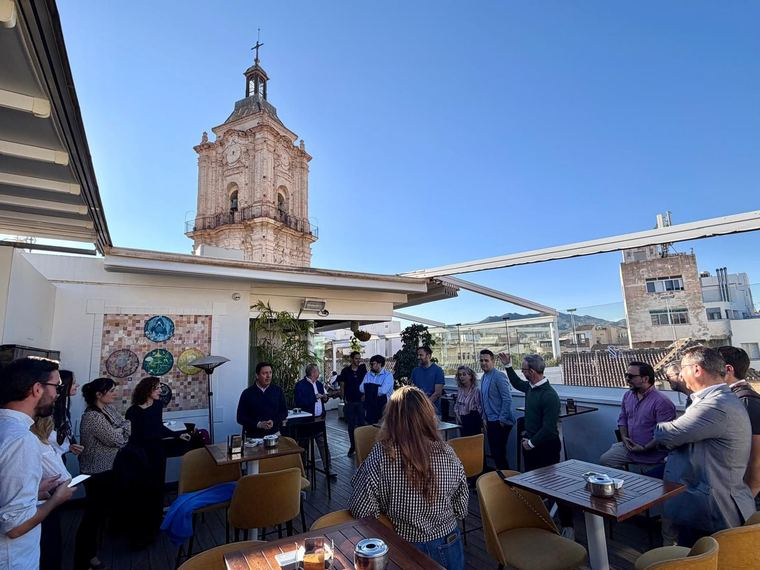
Lo que sí es
Lo que no es
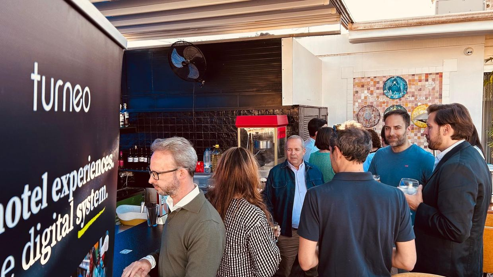
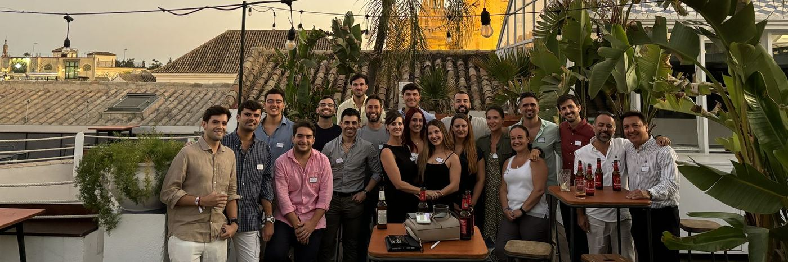
Las cifras, sin maquillar
Preferimos que los veas aquí y no que los descubras después. Todo lo que viene en las páginas siguientes se apoya en esto, y en nada más.
Lo decimos sin rodeos: con el presupuesto de un encuentro puesto en publicidad en LinkedIn llegas a mucha más gente que con todo lo que RevChill publica en un trimestre. Si tu objetivo de este año es impresiones, cierra el dossier y gástalo ahí. No nos vamos a ofender.
Lo que ese presupuesto no te compra en ningún otro sitio es estar dos horas de pie, con una caña en la mano, hablando sin prisa con cuarenta personas que en su gran mayoría son revenue managers. Gente que decide, o que recomienda a quien decide, qué herramienta se contrata el año que viene. Esa conversación no tiene impresiones, tiene nombres.
Las cifras de arriba son de noviembre de 2026 y se actualizan en cada versión de este dossier. Si cuando lo leas han cambiado, pídenos la última.
Quién viene
Los perfiles son variados —hay dirección de hotel, distribución, consultoría, producto y estudiantes— pero el núcleo es claro y constante: gente de revenue. Que convivan seniors y juniors es parte de lo que hace que la conversación funcione: unos preguntan lo que nadie se atreve a preguntar en su empresa y otros contestan sin la pose de la plenaria.
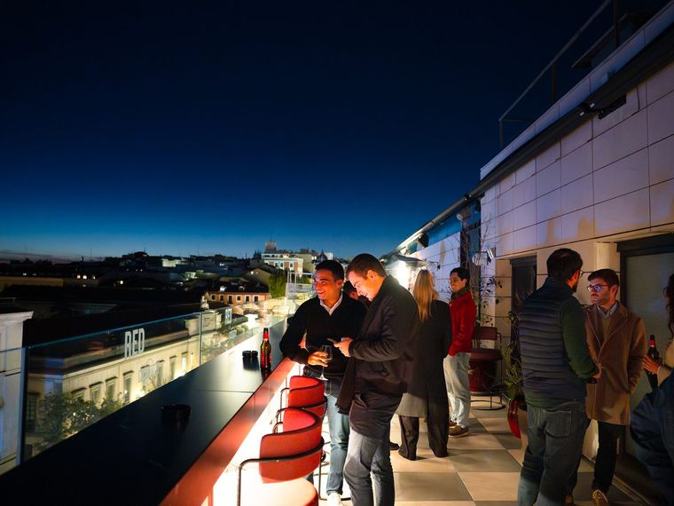
Dónde está la comunidad
Por qué importa el tamaño
Cuarenta personas es el número en el que todavía puedes hablar con quien quieras. A partir de ciento cincuenta se forman corrillos cerrados y acabas la noche habiendo hablado con tres personas, las mismas con las que ya hablabas.
En el Weekend bajamos a quince o veinte a propósito, y ahí ya no hablas con todos: convives con todos.
Los dos formatos
Es la diferencia que explica todo lo demás, incluida la de precio. Los dos reúnen al mismo tipo de persona, pero la relación que construyes en cada uno no se parece en nada.
| RevChill Afterwork | RevChill Weekend | |
|---|---|---|
| Cuánto dura | Dos o tres horas | Cuarenta y ocho |
| Cuánta gente | Unas 40, viene quien quiere | De 15 a 20, seleccionadas |
| Dónde | Una terraza de ciudad | Una casa en plena naturaleza |
| Tu equipo | Asiste a la noche | Convive el fin de semana entero |
| Contacto real contigo | Minutos por persona | Horas por persona |
| Qué compras de verdad | Presencia | Acceso |
| Marcas en el mismo evento | Hasta 3 | Hasta 3 |
| Qué contenido sale | Fotos y un vídeo corto | Fotos, vídeo largo y entrevistas |
| Cuántos hay al año | 10 a 12 | 1 piloto, y hasta 4 o 5 si funciona |
| Aportación orientativa | 1.000 – 1.200 €repartidos entre 1 y 3 marcas | 3.000 – 3.500 €repartidos entre 1 y 3 marcas |
La regla de las tres marcas es la misma en los dos y no se negocia. Un evento con ocho logos deja de ser un encuentro y pasa a ser una feria pequeña, y entonces ya no vale lo que vale.
RevChill Afterwork
El mismo encuentro, repartido de tres maneras. Cuantas menos marcas haya, más espacio ocupas tú.
Tres marcas
Compartido
Hasta 3 marcas, de nichos distintos
400 €
por marca y encuentro
Dos marcas
Acompañado
Solo 2 marcas en la sala
600 €
por marca y encuentro
Una marca
En exclusiva
Eres la única marca de la noche
1.200 €
el encuentro entero
Tu logo solo, tus cinco minutos solo y todo el material de la noche asociado únicamente a tu marca. Es el formato que más recuerdan los asistentes.
Pagas menos por marca si compartes, y pagas más en total si sois varios: cada marca añadida suma trabajo de coordinación y resta espacio a las demás. Lo que no cambia nunca es el tope de tres.
RevChill Weekend · Nuevo en 2027
Es la apuesta del año y es un formato que no existe en el sector. Una casa en plena naturaleza, un fin de semana, y entre quince y veinte personas seleccionadas de entre las inscritas buscando que el grupo funcione: mezcla de perfiles, de tipos de alojamiento y de veteranía.
La primera edición es un piloto, y se hace en Andalucía. Si sale bien —y, sobre todo, si a las marcas que lo acompañen les ha servido— la intención es llevarlo a otras cuatro o cinco localizaciones a lo largo de 2027. Quien entre en el piloto entra en la edición que decide si existen las demás.
Por qué el welcome pack importa
Es la pieza que convierte un fin de semana privado en contenido. La gente fotografía lo que se lleva puesto y lo que se lleva a casa. Una camiseta buena, una pulsera, algo que no se tire: eso circula por redes durante semanas y lo publican ellos, no nosotros. Y es lo que crea el FOMO para la siguiente edición, que es el verdadero activo que estamos construyendo aquí.
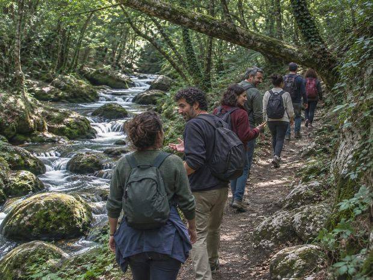
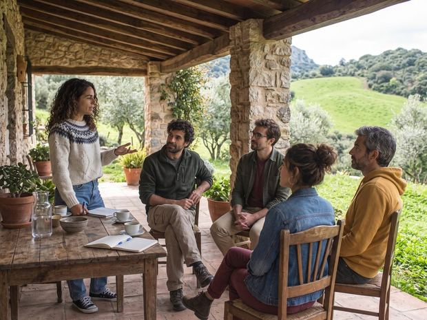
Estas tres imágenes son una recreación: el Weekend no se ha celebrado todavía. Las fotografías de los afterworks que aparecen en el resto del dossier sí son reales.
RevChill Weekend · A dónde va la inversión
El asistente paga una entrada, y para un fin de semana completo con alojamiento y comidas incluidas no llega a cubrir ni la mitad de lo que cuesta. Esa diferencia es, literalmente, lo que aporta el patrocinio. Sin él la entrada se iría al doble, y entonces el grupo lo seleccionaría el bolsillo en vez del perfil, que es justo lo contrario de lo que queremos.
En qué se gasta
Qué compra eso en realidad
Que la entrada siga siendo asequible es lo que permite elegir a los quince o veinte asistentes por criterio y no por quién puede permitírselo. Es la pieza que hace que el grupo valga la pena, y es lo primero que tu marca está pagando.
Lo segundo es el contenido. Sin alguien documentando el fin de semana, esto es una escapada privada de la que no se entera nadie. Con él, es la pieza que vende las ediciones siguientes y en la que tu marca aparece.
Y lo tercero es el recuerdo: lo que la gente se lleva puesto y fotografía durante semanas.
La ruta de senderismo no tiene coste más allá de los snacks. Los desplazamientos hasta la casa corren por cuenta de cada uno, asistentes y marcas incluidas: es la única cosa que no cubre nadie. El desglose del presupuesto, partida a partida, lo enseñamos en la conversación: aquí preferimos no llenarte una página de cifras.
Tres marcas
Compartido
Hasta 3 marcas, de nichos distintos
1.150 €
por marca
Dos marcas
Acompañado
Solo 2 marcas en la casa
1.750 €
por marca
Una marca
En exclusiva
Eres la única marca del fin de semana
3.500 €
el Weekend entero
La primera edición entera asociada a tu marca, con todo el reportaje y el vídeo documental saliendo bajo tu nombre. Solo hay una.
Cada marca trae como máximo un representante, y su plaza va incluida: duerme, come y camina con el grupo. Por eso tres marcas aportan algo más en total que una sola: cada representante añadido es una persona más a la que alojar y dar de comer durante dos días.
RevChill Weekend · Qué compras
Esta es la razón de ser del formato, y la razón de que cueste tres veces más que un afterwork. En un encuentro de tarde, tu equipo habla unos minutos con cada persona y se va. Aquí desayuna con ellos, sube un monte con ellos y cena con ellos dos noches seguidas.
Lo que se construye en esas cuarenta y ocho horas no es un lead. Es una relación que ya no es del todo laboral, con gente que o es cliente tuyo o puede serlo. Cualquiera que haya vendido en este sector sabe lo que vale eso y lo difícil que es comprarlo.
Lo que te llevas
Lo que te pedimos
Aportaciones en especie
Buscamos sobre todo empresas del sector hotelero, normalmente tecnológicas, porque es a lo que se dedica la comunidad. Pero no es un requisito: si crees que tu producto o tu servicio encaja en un encuentro de profesionales del sector, hablamos. Varias de las colaboraciones que mejor han funcionado no fueron una transferencia.
Qué aceptamos
Cómo se valora
Lo que aportas se valora por lo que nos ahorra, no por tu precio de tarifa. Si nos das cien camisetas que a ti te cuestan 600 €, cuentan 600 €, porque es lo que íbamos a gastar nosotros. Es la única forma de que la cuenta siga cuadrando al final del año.
Por eso las licencias y los códigos de descuento no sustituyen aportación: no pagan la cena ni al fotógrafo. Son bienvenidos como extra dentro del welcome pack, y como extra se agradecen mucho.
A medida
Todo lo que has leído hasta aquí es lo que sabemos hacer, no una carta cerrada. Somos un proyecto pequeño y eso tiene una ventaja concreta: podemos montar algo que no esté en este documento sin pedir permiso a nadie ni esperar al comité de marketing de nadie.
Los límites
Esto está aquí porque es lo que protege el valor de todo lo demás. El día que vendamos la lista de asistentes, dejará de venir gente, y entonces no habrá nada que patrocinar.
Hacia dónde va esto
Las cifras del principio son pequeñas, pero la dirección está clara. El plan de 2027 no es llenar salas más grandes: es que el contenido sea más cercano y más personal, que se vea a la gente y no al logo, y que las marcas tengan más peso dentro de lo que se cuenta sin que esto deje de parecer RevChill.
Dónde estamos
A dónde vamos en 2027
Quien entre en 2027 lo hace con los precios de cuando éramos pequeños, y con el trato que se le da a quien llega primero: elegir ciudades antes que nadie, decidir el formato con nosotros y repetir antes de que se ofrezca fuera. A los partners fundadores les congelamos el precio para 2028, crezca lo que crezca esto.
Quién ha estado
Tecnológicas de revenue, cadenas hoteleras, consultoras y los espacios que nos han abierto sus puertas. Ninguna repitió nicho en la misma noche.
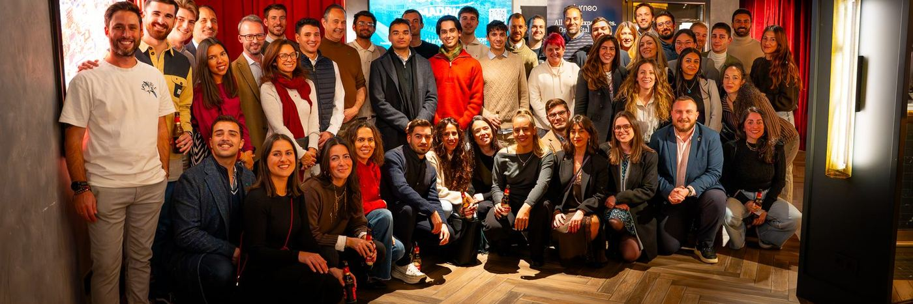
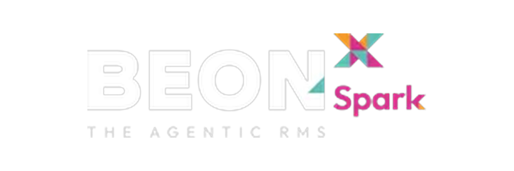
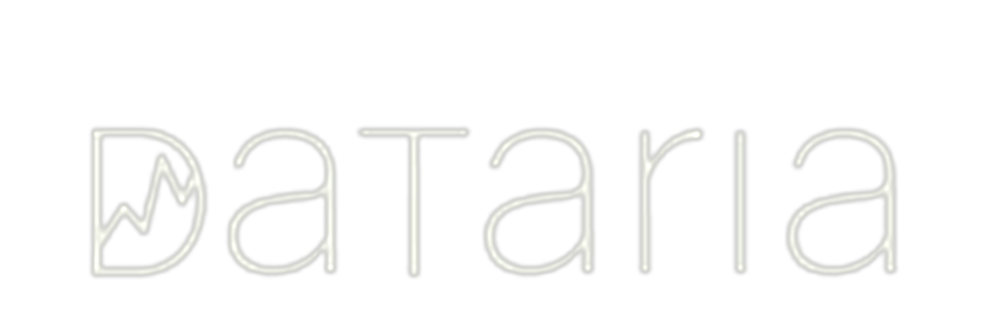
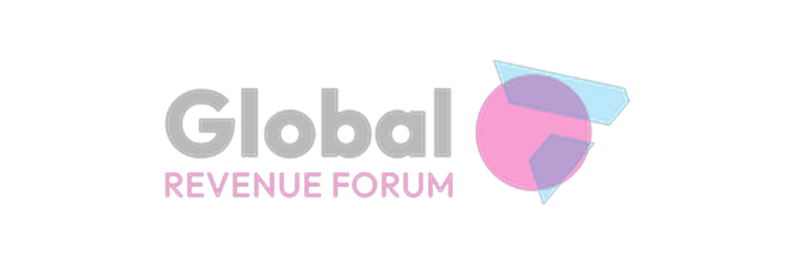
No hace falta que decidas nada por correo. Cuéntame a qué te dedicas y qué esperarías sacar de esto, y te digo con franqueza si creo que encajas o no. Si no encajas, te lo diré: es más barato para los dos que descubrirlo después del primer encuentro.
hola@revchill.org